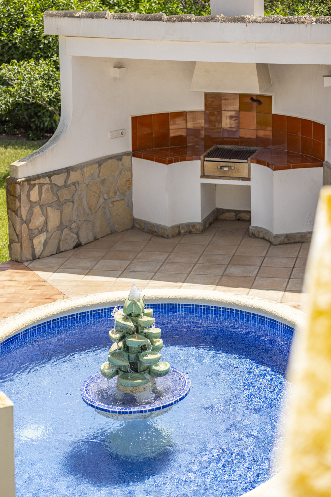

Seit 1996
Ein Zuhause, mit Liebe gebaut
Drei Jahrzehnte lang war Villa Candela das Refugium einer Familie, deren Leidenschaft Häuser sind — Vater Architekt, die Kinder im Bauwesen. Was hier entstand, wurde nicht gekauft, sondern gestaltet, erweitert und mit Sorgfalt gepflegt.
30 Jahre Familienbesitz haben hier keine Abnutzung hinterlassen, sondern Substanz, die man spürt. Das Haus, das 1998 baulich erweitert und vollständig modernisiert wurde, steht heute in einem Zustand, den man selten findet — gepflegt von Menschen, die wissen, wie ein Haus gebaut sein muss. Nun beginnt für Villa Candela ein neues Kapitel. Vielleicht Ihres.
Mehr über das Bau- und Planungsunternehmen der Familie Moussavi in München